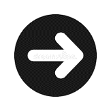

Keyboard input
Overview – Keyboard input
Many types of assistive technology act as keyboard emulators, including speech input software, sip-and-puff software and onscreen keyboards, to name a few. By making your design keyboard accessible, you accommodate a wide variety of assistive technologies and user groups.
Keyboard accessibility deals with these topics:
- Keyboard focus
See module 3 > Navigation > What is focus?
- Focus order
See module 3 > Navigation > Focus order
- Visual focus indicator
See module 3 > Links > Visual focus indicator
- Keyboard functionality
- Keyboard traps
Keyboard functionality
Ensure all page content can be operated through a keyboard. Most actions carried out by a mouse or other pointing device can also be done from the keyboard (e.g., clicking, selecting, moving, sizing). Examples of functionality include:
- Using physical controls such as links, menus, buttons, and form controls (checkboxes, radio buttons, text input, etc.).
- Using features like drag and drop, selecting text, resizing regions or bringing up context menus.
- Performing tasks such as adding or removing an item from a shopping cart or initiating a chat session with a sales representative.
The exception is any action that depends on the path of the user’s movement (e.g., free hand drawing such as a signature). Such actions cannot be done from the keyboard.
A keyboard user typically presses the Tab key to navigate from interactive component to interactive component—links, buttons, fields for inputting text, etc. When an item is tabbed to, it has keyboard "focus" and can be activated or manipulated with the keyboard. Other keys, primarily the arrow keys, move focus inside of components that include multiple focusable elements. For instance, after pressing the Tab key to move focus to a radio button in a group, pressing arrow keys moves focus among the radio buttons in the group, and pressing the Tab key moves focus out of the radio group to the next element in the tab sequence. The path that the focus follows when pressing the Tab key is known as the tab sequence or tab ring.
Other important keyboard commands:
- CTRL-L takes focus to the browser’s address field
- CTRL-W closes a tab
- CTRL-T opens a new tab
- Spacebar scrolls down one screen at a time (Shift-Spacebar scrolls up)
- Spacebar selects radio buttons and checkboxes
- Enter key activates a link or submits a form
- Spacebar or Enter key activates a button
Use native HTML links and controls
When possible, use native HTML links and form controls rather than custom elements. User agents provide the keyboard operation of native HTML links and form controls and map them to an accessibility API. Assistive technologies use the accessibility API to extract and present useful information, such as the role, name, state and value.
The standard HTML controls and links:
<a><fieldset><input>Many types; see Module 6: Forms > Validating common input types.
<select><textarea><button>
Use the onclick event of anchors and buttons
To ensure keyboard users can invoke a scripting function, use native HTML links and buttons with the onclick event. The onclick event of both elements is device independent: it maps to a mouse click and the Enter and Spacebar keys.
HTML
Code begins
<button onclick="doStuff();">Do stuff</button>
<script>
function doStuff () {
alert('Button clicked');
}
</script>Code ends
A submit button inside a <form> does not require an event handler. In both the following cases, pressing the submit button will submit the parent form without the need for handling the onclick event separately. Here, the form’s onsubmit value triggers validation.
HTML
Code begins
<form onsubmit="handle_form_submission()">
[…]
<input type="submit" name="submit" value="Post your reply" />
Or:
<button type="submit" >Post your reply</button>
</form>Code ends
Pair mouse event handlers with keyboard event handlers
Using both keyboard-specific and mouse-specific events together ensures that content can be operated by a wide range of devices.
The following table suggests mouse event handlers to pair with keyboard event handlers:
|
Use … |
… with |
|---|---|
|
mousedown |
keydown |
|
mouseup |
keyup |
|
click |
keypress |
|
mouseover |
focus |
|
mouseout |
blur |
When using a native HTML button or link, user agents process the click event regardless of whether it was activated with the mouse or the keyboard. It’s not necessary to duplicate this event when adding handlers to natively focusable HTML elements. However, if not using a native button or link, it is necessary to add keypress.
Because the keypress event handler reacts to any key, the event handler should first check that the Enter key was pressed before proceeding to handle the event. Otherwise, the event handler will trigger on any key press, even the Tab key to leave the control.
If using the ARIA role="button" attribute instead of the native <button> or <input type="button"> elements, you will need to both make the element focusable and define event handlers for click and for the Enter and Spacebar keypresses.
Good example: Pairing mouse and keyboard events
In this example of an image link, the image is changed when the user positions the pointer over the image. To provide keyboard users with a similar experience, the image is also changed when the user tabs to it.
HTML
Code begins
<a href="menu.php"
onmouseover="swapImageOn('menu')"
onfocus="swapImageOn('menu')"
onmouseout="swapImageOff('menu')"
onblur="swapImageOff('menu')">
<img id="menu" src="menu_off.png" alt="Menu" />
</a>Javascript
Code begins
function swapImageOn(id){
document.getElementById(id).src='images/menu_on.png'
}
function swapImageOff(id){
document.getElementById(id).src='images/menu_off.png'
} Code ends
Bad example: Mouse-dependent link
In this example, a custom image link responds to mouse click only and can’t be activated by keyboard. It lacks an equivalent event handler for the Enter key. The onclick event only responds to keyboard input when applied to a native HTML button or link, and this is an <img> element.
The image link also lacks a tabindex="0" attribute so doesn’t receive keyboard focus.
Finally, the image link lacks the role="link" attribute, which identifies it to assistive technology as a link.
Example begins
Example ends
HTML
Code begins
<img class="img-link" onclick="goToLink(event, 'index.html')" src="arrow.gif" alt="Next page">Code ends
CSS
Code begins
.img-link:hover { cursor: pointer; }Code ends
Good example: Mouse and keyboard event handlers on a custom button
In this example, a custom button built from a <span> element has the necessary accessibility semantics and functionality:
- A
tabindex="0"attribute, to ensure it receives keyboard focus. - A
role="button"attribute, to identify its purpose to assistive technology. - A visual indicator of keyboard focus and mouse hover via the CSS.
- An
onclickevent handler for activation by mouse. - An
onKeyDownevent handler for action by keyboard. The function terminates if the keypress is not the Space or Enter key.
The JavaScript adds names to a list below the form.
Example begins
Add nameExample ends
HTML
Code begins
<label for="newName">Add a name</label>
<input type="text" id="newName">
<span role="button" tabindex="0" onclick="handleCommand(event)" onKeyDown="handleCommand(event)">Add name</span>
<ul id="nameList"></ul>Code ends
View JavaScript
Code begins
function handleCommand(event) {
// Handles both mouse clicks and keyboard
// activate with Enter or Space
// Keypresses other then Enter and Space end the script
if (event instanceof KeyboardEvent
&& event.key !== 'Enter'
&& event.key !== ' ') {
return;
}
// Get the new name value from the input element
let newNameInput = document.getElementById('newName');
let name = newNameInput.value;
// clear the text field
newNameInput.value = '';
// give the text field focus to enable entering an additional name
newNameInput.focus();
// Don't add blank entries to the list
if(name.length > 0) {
listItem = document.createElement('li');
listItem.appendChild(document.createTextNode(name));
// Add the new name to the list
let list = document.getElementById('nameList');
list.appendChild(listItem);
}
}Code ends
View CSS
Code begins
[role="button"] {
padding: 0.25em 0.5em;
background-color: #CCCCCC;
color: black;
margin-left: 5px;
outline: 2px solid white;
}
#newName:focus,
#newName:hover {
background-color: rgb(186, 228, 253);
}
[role="button"]:focus,
[role="button"]:hover {
outline: 2px dotted rgb(81, 81, 250);
}Code ends
Keyboard trap
A keyboard trap occurs when a keyboard user can navigate into a component or element on a web page but cannot navigate out. A simple example is a pop-up window (a modal window or lightbox) that doesn’t close when the user presses the Esc key and with a close button that doesn't respond to keyboard.
Ensure the user can get in and out of the interactive elements using only the keyboard.
Bad example: JavaScript focus() traps the keyboard user
This example illustrates the keyboard trap dangers of using the JavaScript focus() method. The form input field here uses the onblur event, which is triggered when focus leaves the element. When the keyboard user presses the Tab key to move focus away from the input field, the onblur event kicks in and sets focus back on the input field, trapping the user.
HTML
Code begins
<label for="lastname">Last name</label>
<input id="lastname" type="text" value="" class="trap" onblur="this.focus();">Code ends
Bad example: JavaScript keydown() and event.preventDefault() trap the keyboard user
This example illustrates the keyboard trap dangers of a JavaScript key press event. The JavaScript function makes no effort to detect which key has been pressed (it should identify the Enter key), so it will trigger when any key is pressed. Furthermore, the default action associated with any key press is prevented with event.preventDefault(). Consequently, when a user attempts to move focus away from the link by pressing the Tab key, the keydown event fires, the default action of the Tab key (moving focus to the next focusable element) is prevented, focus remains on the link, and a new window opens. The keyboard user is trapped. Even pressing the Ctrl + Alt + Delete keys in Windows to bring up the Task Manager will fail, simply launching more windows in response to the keydown event. The user's computer is hijacked, and unless a colleague or friend can move focus away from the element with a mouse, the user is forced to restart the computer.
HTML
Code begins
<span class="trap link" role="link" tabindex="0" data-href="some-page.html">
Some page
</a>Code ends
JavaScript
Code begins
$(document).ready(function(){
$('span.trap').keydown(function(event){
event.preventDefault();
var href = $(this).attr('data-href');
var text = $(this).text();
window.open(href, text);
});
});Code ends
Focus management with JavaScript-injected content
Content added to a page using JavaScript can be in one of two locations:
- The added content follows the trigger in the DOM. In this case, the focus does not need to be managed. When activated, the triggering control retains focus, and the added content is next in the screen-reader reading order and tab order. The added content can be absolutely positioned via CSS to be elsewhere on the page.
- The added content does not follow the trigger in the DOM. In this case, the focus must be moved to the added content using the JavaScript
focus()method. The target must have thetabindex="-1"attribute to receive focus. Also, the target must have text content or programmatically-determined text via a label, or screen reader users will hear nothing upon arrival. If the added content can be collapsed/de-activated, collapsing it returns focus to the triggering control (or to another logical location, depending on the context). Prevent focus from being lost or reset to the top of the page.
There are exceptions if you are implementing some widget patterns described in the ARIA Authoring Practices Guide. Content authors must manage focus within the following container roles:
Managing focus within these composite widgets is a separate concern addressed in module 12.
Good example: Focus management in a single-page web application
In this example, a single-page web application uses JavaScript to load a full article inside the <main> element, without a page load. Links in the navigation menu trigger the content load. This example has just a few menu items, but sites often have lengthy menus. Moving the focus spares keyboard users of single-page apps the tedious task of tabbing through a menu to get at the main content.
The <h1> heading on each page has a tabindex="-1" attribute, to enable it to be targeted by scripts. The JavaScript identifies the <h1> with a query selector and sets focus on it. The script also updates the page’s <title> element to match the heading text.
The JavaScript’s first use should be triggered via the menu, not on page load. Screen reader users’ initial interaction with the page should start at the top, as usual.
HTML
Code begins
<nav>
<a href="/">Home</a>
<a href="/policies">Policies</a>
<a href="/practices">Practices</a>
</nav>
<main>
// injected:
<h1 tabindex="-1">Policies</h1>
// rest of injected content ...
</main>Code ends
JavaScript
Code begins
// This gets called every time new content loads:
function onNewPage() {
var heading = document.querySelector('h1');
heading.focus();
// Update the page title
document.title = heading.textContent;
}Code ends
Good example: Focus moved from trigger to dialog
In this example, pressing the Ableplayer's transcript button :
- launches an ARIA dialog widget holding the transcript, and
- moves focus to the first button inside the dialog, the user preferences button :
JavaScript
Code begins
this.$transcriptArea.find('button').first().focus();Code ends
Good example: Focus managed on a dialog using keyboard interaction
In this example, when the user clicks the 'Submit' button a pop-up window opens and focus is sent to the pop-up's first child focusable element. When the user clicks the pop-up window’s ‘Close’ button, focus is sent back to the triggering button.
Example begins
Example ends
View HTML
Code begins
<h1>Modal Popup Example</h1>
<!-- Trigger/open the modal -->
<button class="submit" id="myBtn">Submit</button>
<!-- The modal -->
<div id="myModal" class="modal">
<!-- Modal content -->
<div class="modal-content">
<h2>Your form has been submitted.</h2>
<button class="btn-close">Close</button>
</div>
</div>Code ends
View CSS
Code begins
/* The Modal (background) */
.modal {
display: none; /* Hidden by default */
position: fixed; /* Stay in place */
z-index: 1; /* Sit on top */
padding-top: 100px; /* Location of the box */
left: 0;
top: 0;
width: 100%; /* Full width */
height: 100%; /* Full height */
}
/* Modal Content */
.modal-content {
background-color: #fefefe;
margin: auto;
padding: 20px;
border: 1px solid #888;
width: 25%;
height:25%;
}
.submit {
background-color:#e60914;
border:0;
border-radius: 5px;
box-shadow: 0 2px 4px rgba(0,0,0,0.2);
color:#fff;
font-size: 15px;
padding: 10px 25px;
}
.submit:hover,
.submit:focus {
color: #000;
text-decoration: none;
cursor: pointer;
}Code ends
View JavaScript
Code begins
var modal = document.getElementById("myModal");
// Get the button that opens the modal
var btnSubmit = document.getElementById("myBtn");
// Get the button that closes the modal
var btnClose = document.getElementsByClassName("btn-close")[0];
// When the user clicks the button, open the modal
btnSubmit.onclick = function() {
modal.style.display = "block";
btnClose.focus();
}
//prevent tabbing to the page
btnClose.addEventListener("keydown", event => {
if (event.shiftKey || event.keyCode === 9) {
btnClose.focus();
event.preventDefault();
false;
}
});
// When the user clicks the close button, close the modal
btnClose.onclick = function() {
modal.style.display = "none";
btnSubmit.focus();
}
// When the user clicks anywhere outside of the modal, close it
window.onclick = function(event) {
if (event.target == modal) {
modal.style.display = "none";
btnSubmit.focus();
}
}
document.addEventListener('keyup', function (event) {
if ( event.keyCode == 27 ) { //keycode 27 is escape
modal.style.display = "none";
btnSubmit.focus();
}
})Code ends
Related WCAG resources
Related WCAG resources
Success criteria
Techniques
- G202: Ensuring keyboard control for all functionality
- G90: Providing keyboard-triggered event handlers
- G21: Ensuring that users are not trapped in content
- H91: Using HTML form controls and links
- SCR20: Using both keyboard and other device-specific functions
- SCR29: Adding keyboard-accessible actions to static HTML elements
- SCR35: Making actions keyboard accessible by using the onclick event of anchors and buttons